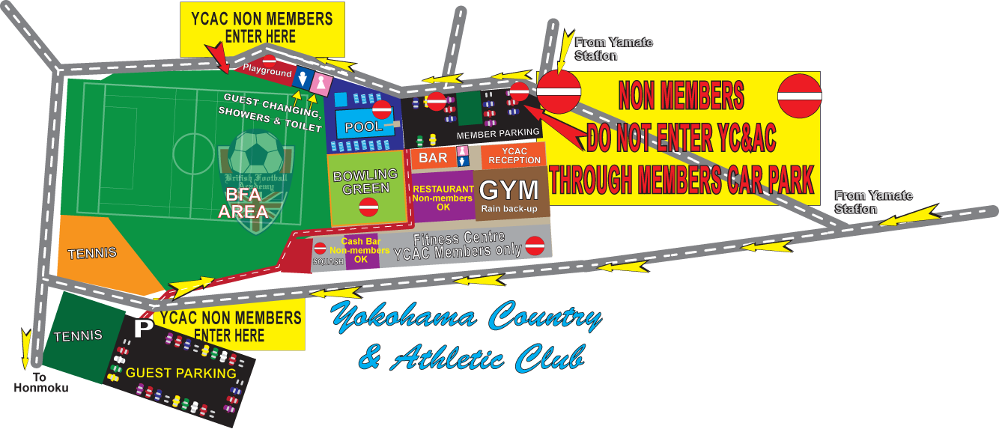

|
YC&AC is a fully equipped sports & country club, inaugurated in 1868 by a small group of English traders, offering one of the most extensive sports and leisure complexes to be found anywhere in Japan.
|
CLASSES AT THIS LOCATION
|
|
FRIDAYS
|
PUPS
3:30~4:00pm
|
 BULLDOGS BULLDOGS
4:05~4:55pm
|
 LIONS LIONS
5:00~6:00pm
|
 ACADEMY & STARS ACADEMY & STARS
6:00~7:20pm
|
GROUND & FOOTWARE
 The ground is a 3rd generation all-weather field. Players are required to wear footwear with good traction, such as rubber-soled 'turf' football shoes. Please note that football boots with moulded or screw-in studs will not be permitted (please see our Footware Chart). The ground is a 3rd generation all-weather field. Players are required to wear footwear with good traction, such as rubber-soled 'turf' football shoes. Please note that football boots with moulded or screw-in studs will not be permitted (please see our Footware Chart).
By Train:
Take the JR Keihin Tohoku/Negishi Line to Yamate Station. Go out of the exit and turn left and left again under the train tracks. Climb the winding hill and turn right when you reach the top. Walk past the playground and you will come to a fork in the road. Take the left fork which takes you down behind YC&AC to the guest parking. Enrtry to YC&AC is on the right next to the tennis courts. Alternatively, if you come up the back way from the station (short cut) please go to the gate at the corner of the ground. DO NOT ENTER YC&AC THROUGH THE MEMBERS PARKING/MAIN ENTRANCE!
By Car: SEE MAP Please note that only club members with the correct permit may park in the upper car park. Guests may park in the lower car park near the tennis courts.
If there is heavy rain, snow (thick on the ground), lightning, or the ground is in poor condition due to earlier inclement weather the ground cannot be used, and the sessions will be cancelled.
Please understand that there will be no refund or make up sessions in the event of cancelled sessions due to the weather/ground condition.
We will inform you by 3:00pm on the day if the sessions are cancelled via our Facebook page: https://www.facebook.com/BritishFootballAcademy.
VENUE RULES:
Please also make sure you read and comply the regulations in the BFA members guide.
Parking @ YC&AC
Non YC&AC members are asked to park their cars at the lower parking. (See below)
At YC&AC
- DO NOT ENTER YC&AC THROUGH THE MEMBERS PARKING/MAIN ENTRANCE!
- Food and sugared drinks are not allowed on the playground. (water/sports drinks only)
- No litter to be left anywhere. Please throw your rubbish in the bins provided.
- No Pets allowed.
- Non YC&AC members are not permitted access to ANY part of the facilities that BFA don’t use..
- Non YC&AC members are to use the guest toilets at the corner of the field.

top
|